完整安装包
下载文件名以 -setup.exe 结尾的版本，按安装向导完成安装。
MyTools 是一款类似 Raycast、Alfred 的 Windows 效率工具：用更小的内存占用和更快的响应速度，把应用、文件与常用操作汇聚到一个搜索框；还可以直接使用 AI，按自己的想法随时创建和修改插件。
GET STARTED
从 GitHub Releases 获取官方版本。完整安装包适合大多数用户；便携版解压即用，但不支持应用内自动更新。
下载文件名以 -setup.exe 结尾的版本，按安装向导完成安装。
下载 -portable.zip，解压后运行 MyTools.Desktop.exe。
前往 MyTools 项目首页 → Installation，根据表格选择 Stable 或 Beta。Stable 为稳定版；Beta 包含最新功能。
由于安装包暂未启用 Authenticode 签名，Windows SmartScreen 可能阻止启动。确认安装包来自 qpingcode/MyTools 官方仓库后，点击“更多信息”，再点击“仍要运行”。
启动后 MyTools 常驻系统托盘。双击图标或按 Alt+Space 打开搜索。
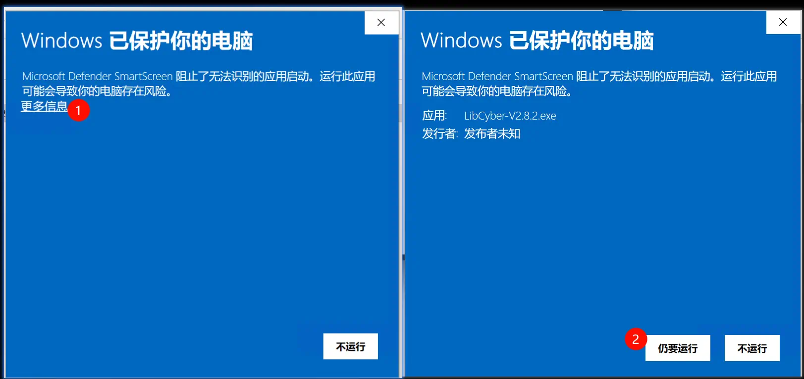
images/01-smartscreen.webp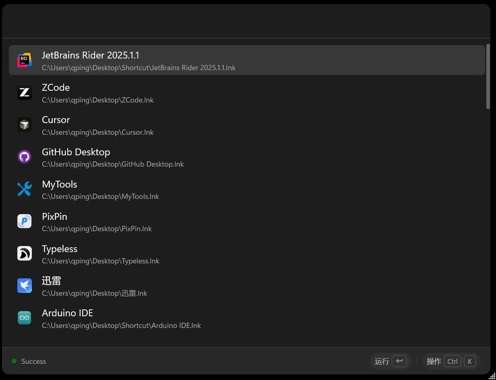
images/01-install.webpKEEP CURRENT
在任务栏通知区域找到 MyTools 图标并右键。
检测到新版本后，按界面提示下载并重启。
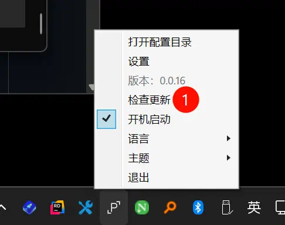
images/02-check-update.webpCORE WORKFLOW
搜索框是 MyTools 的入口。它会聚合应用、文件和已启用插件的结果，并允许你只用键盘完成选择和操作。
Alt + Space
例如 vscode
Enter 或 Ctrl + 数字
按 Alt + Space，输入 vscode，选中 Visual Studio Code 后按 Enter。
输入文件名或路径中的关键字。结果出现后直接打开，也可以查看该结果的更多操作。
按 Ctrl + 1…9 直接执行对应结果；Ctrl + 0 对应第 10 项。
选中结果后按 Ctrl + K 展开更多操作，例如复制、打开目录或使用其他方式执行。
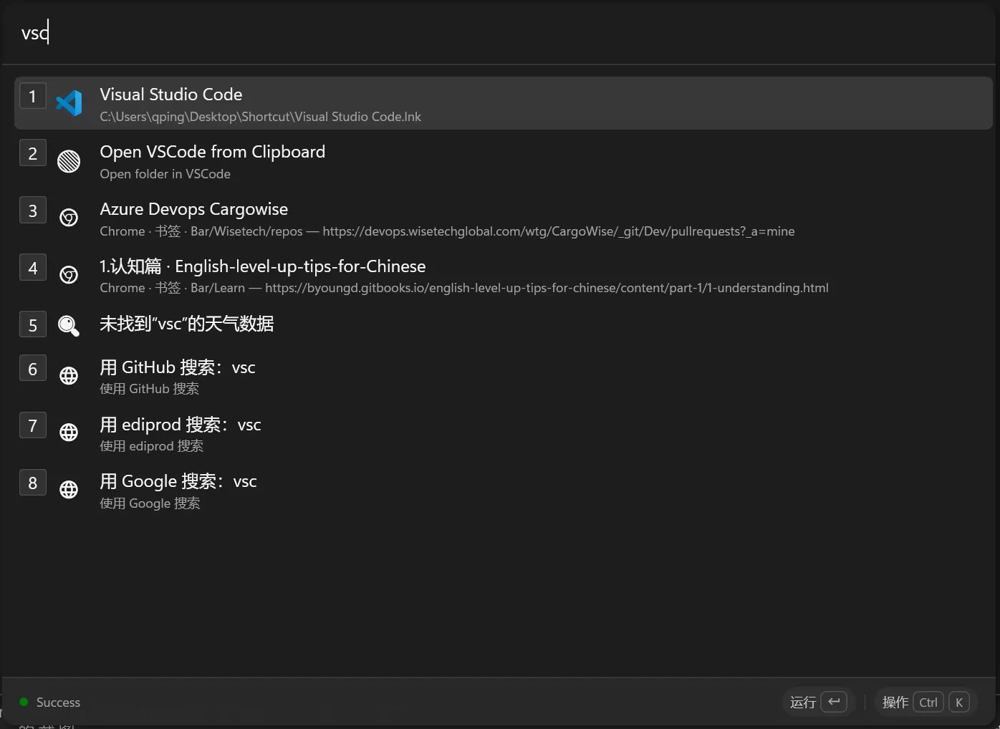
images/03-global-search.webp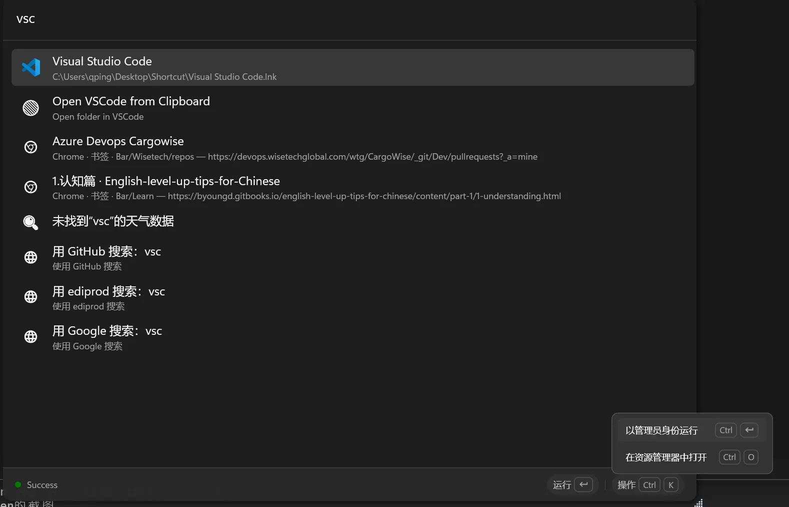
images/03-actions.webpPERSONALIZE
打开“设置”（搜索 settings，或使用默认热键 Alt + S），在“常规”分类完成个性化。
点击输入框后按下新的组合键并保存。新的全局热键会替换默认的 Alt + Space。
选择简体中文或 English。语言设置需要重启 MyTools 后完全生效。
在浅色与深色主题间切换，界面会立即跟随选择更新。
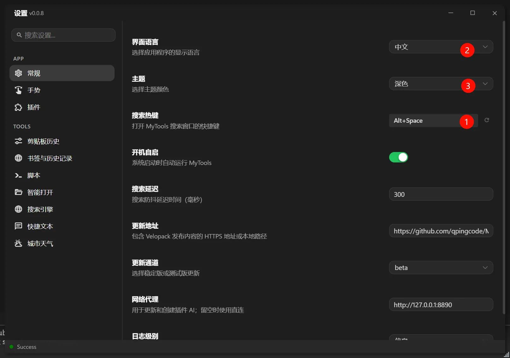
images/04-general-settings.webpPLUGIN CONTROL
进入“设置 → 插件”，选择一个插件即可调整它的调用方式。下面四项决定插件在哪里出现、怎样快速打开。
从任意窗口直接打开该插件。
避免与系统或其他软件热键冲突。输入别名后再按一个空格，即可进入该插件的专属搜索或详情页。例如输入 guid 进入 UUID 插件，再继续输入 10。
控制插件是否加载和参与搜索。
暂时不用的插件可以关闭。开启后，无需先输入别名，插件结果会直接混入全局搜索。
高频插件开启；低频插件关闭以减少干扰。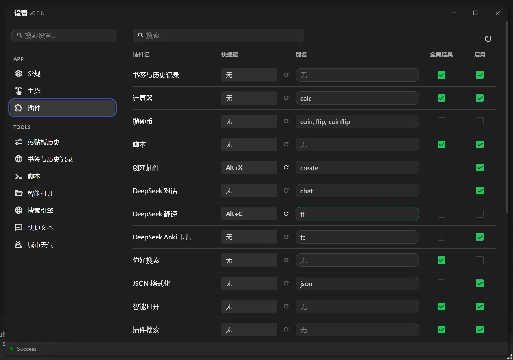
images/05-plugin-settings.webpMOUSE GESTURES
进入“设置 → 手势”，打开“启用”，然后按提示重启。
按住鼠标右键移动，画出已配置的轨迹。
松开右键后，MyTools 执行绑定的键盘快捷键或鼠标操作。
在手势列表中新建一项并录入轨迹。
可设为全局，也可限定只在某些进程中生效。
设置要模拟的快捷键或鼠标按键，保存后测试。
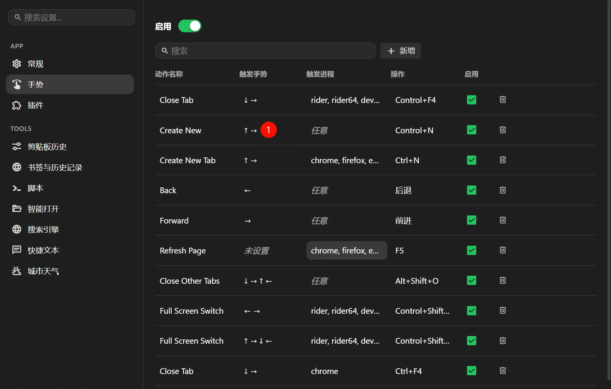
images/06-mouse-gestures.webp从生成 UUID 到翻译文本，下面按实际操作演示常用插件。
IDENTIFIERS
guid→生成 1 个 UUIDguid 10→生成 10 个 UUIDUUID 插件默认别名是 guid。输入数字可批量生成，最多 1000 个；在更多操作中还可以切换标准、无连字符和大写格式。
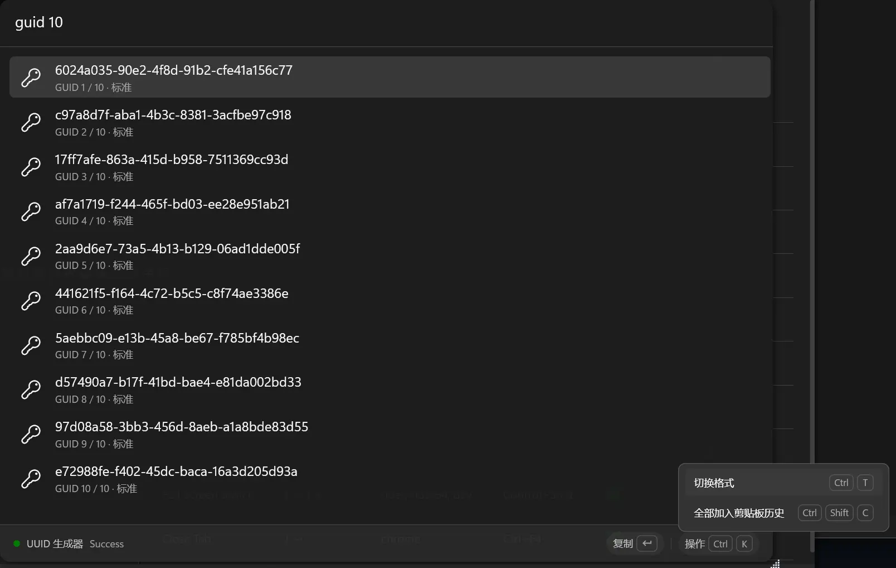
images/07-uuid.webpCLIPBOARD
打开剪贴板历史后输入关键字过滤；按 Enter 粘贴选中项，或用 Ctrl + 数字快速选中。
选中富文本内容，执行“纯文本粘贴”（默认操作热键 Ctrl + Enter），仅保留文字。
每按一次连续粘贴热键，都会粘贴并移除最新一条记录。可用上一节批量生成的 UUID 演示。
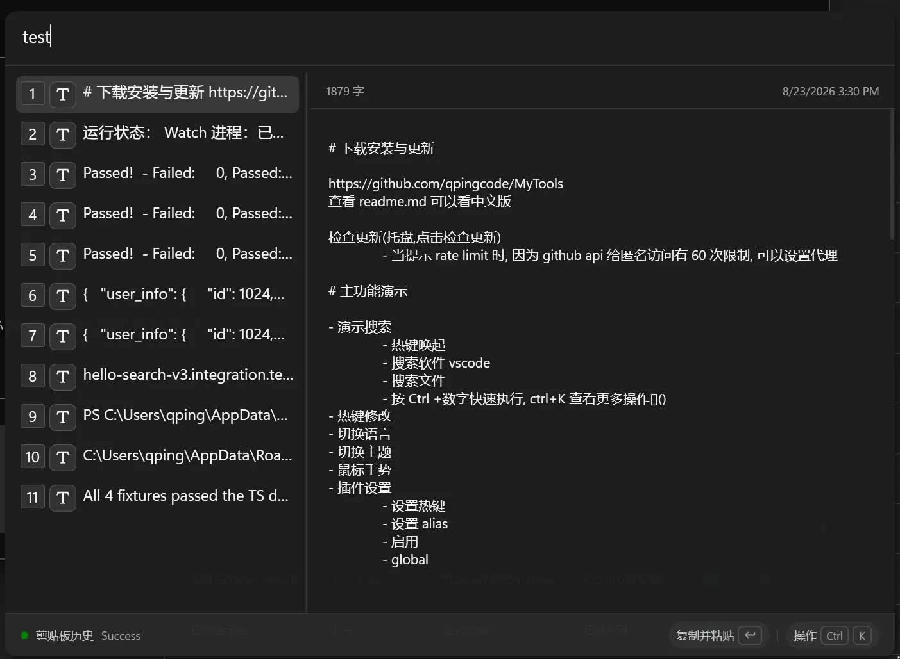
images/08-clipboard.webpCALCULATE
计算器已参与全局搜索，直接输入表达式即可看到结果，无需先进入插件。
1231+123132=124363输入别名 calc 进入计算器，再查看之前的计算记录。选中结果可复制到剪贴板。
calc→历史列表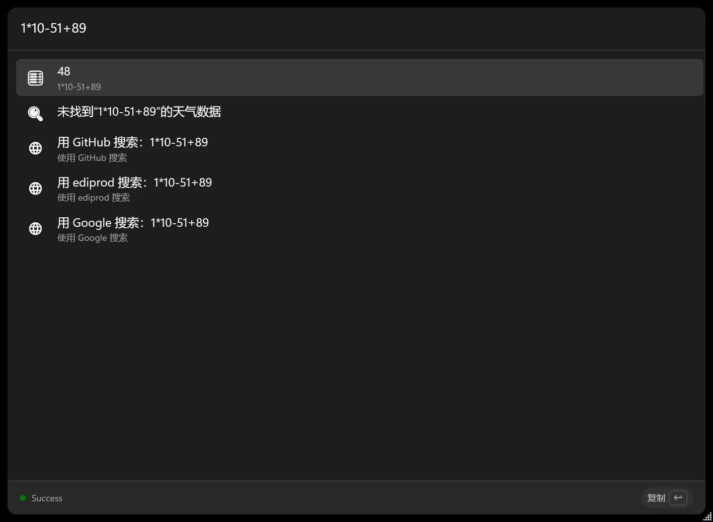
images/09-calculator.webp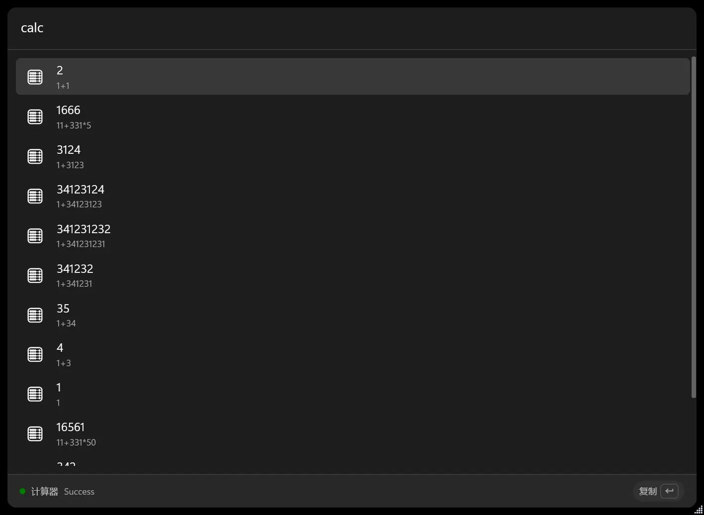
images/09-calculator-history.webpBROWSER DATA
“书签与历史记录”插件支持 Chrome、Edge 和 Firefox。启用后，书签和访问记录会直接出现在全局搜索结果中。
唤起 MyTools，输入书签标题或网址中的关键字，结果副标题会标注浏览器和“书签”。
输入最近访问页面的标题或地址，结果副标题会标注“历史”。按回车用默认浏览器打开。
进入“设置 → 插件 → 书签与历史记录”，关闭“搜索历史记录”；也可单独关闭某个浏览器。
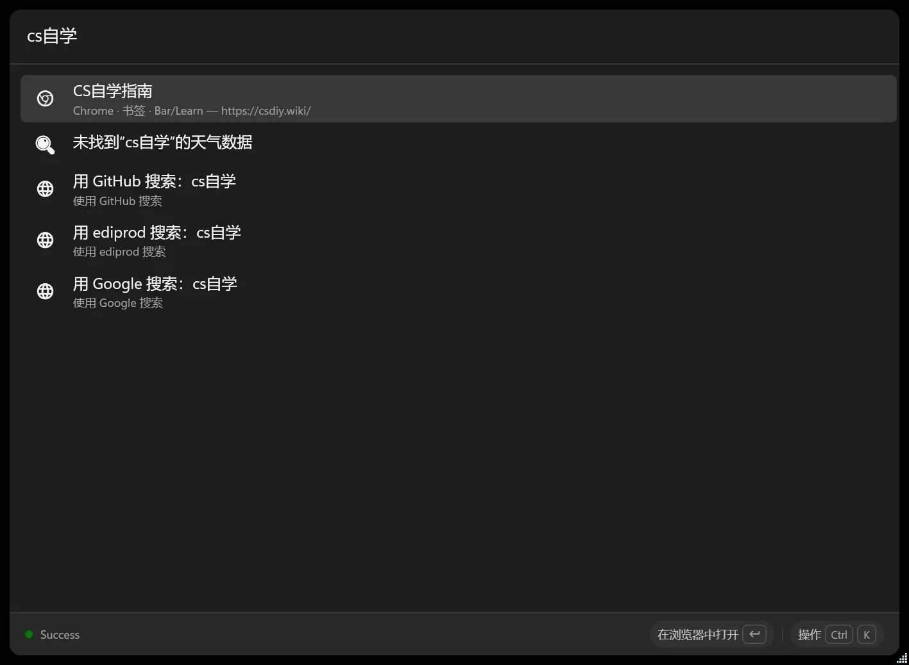
images/10-browser-history.webp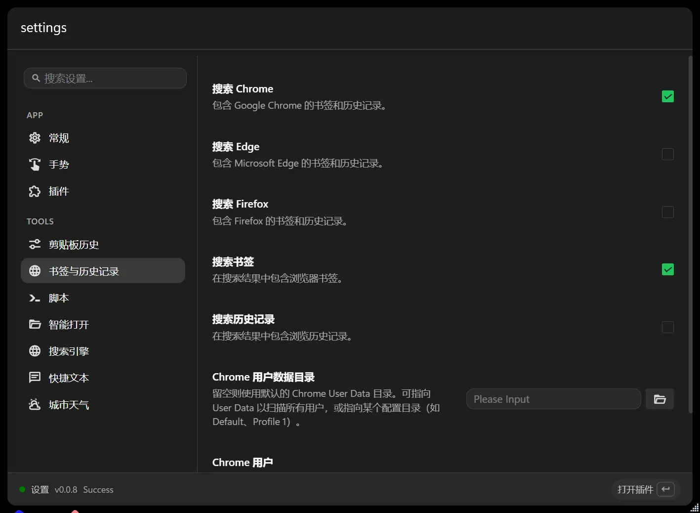
images/10-browser-settings.webpWEB SEARCH
在全局搜索中输入关键词，选择“用 Google / Bing / GitHub 搜索”并回车，即可在默认浏览器中打开结果。
MyTools→用 GitHub 搜索进入“设置 → 插件 → 搜索引擎”，新增名称和 URL。用 {query} 标记关键词插入位置。
https://duckduckgo.com/?q={query}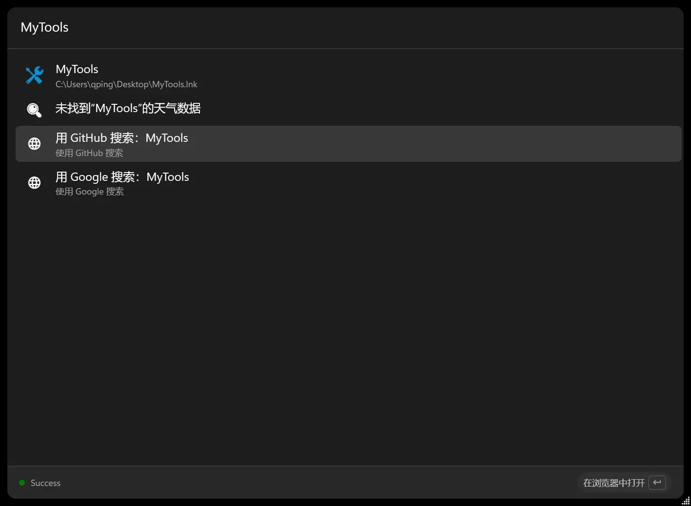
images/11-search-engine.webp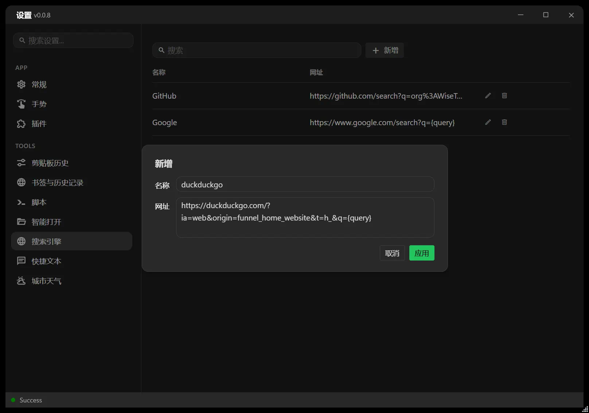
images/11-search-engine-settings.webpQUICK TEXT
把邮箱、地址、回复模板等高频文字保存成快捷文本。搜索触发词后回车，内容会复制并粘贴到此前聚焦的窗口。
进入“设置 → 插件 → 快捷文本”。
触发词填写 email，短语内容填写你的邮箱。
回到目标输入框准备调用。
按 Alt + Space。
输入 email 找到刚添加的短语。
按回车，内容自动进入原来的窗口。
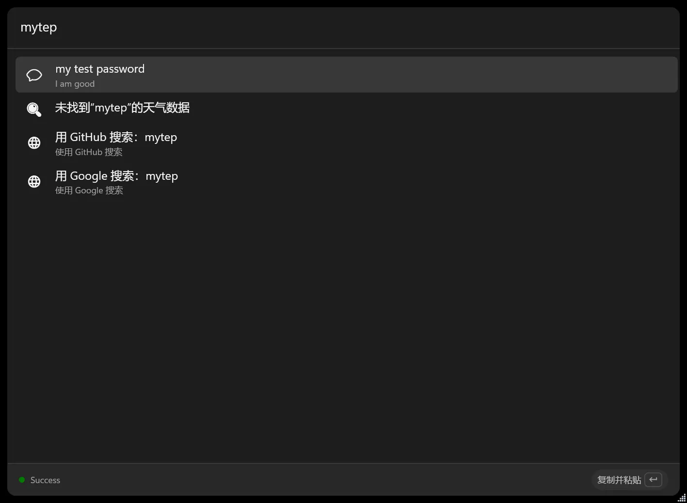
images/12-quick-text.webp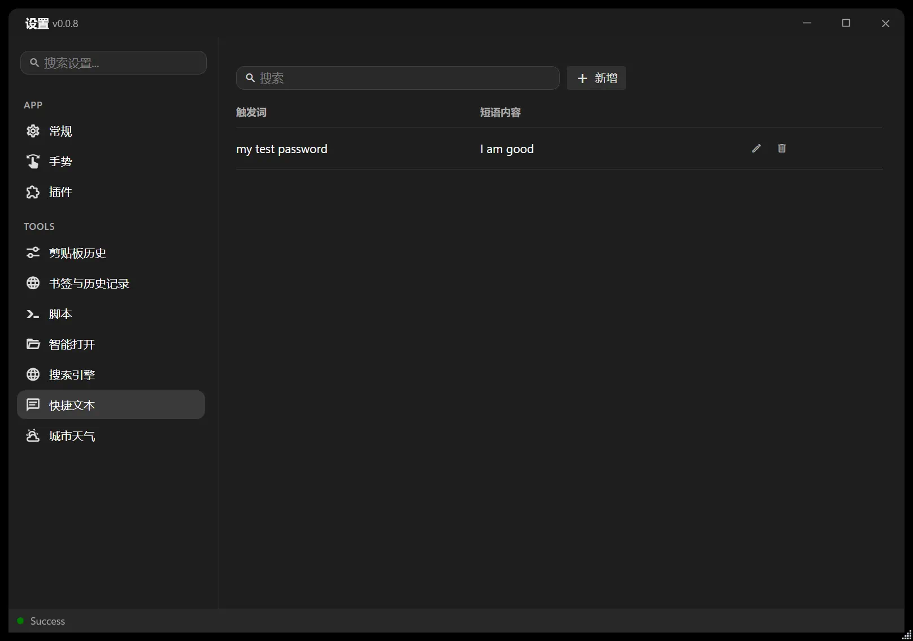
images/12-quick-text-settings.webpTRANSLATION
使用默认热键 Alt + C 或别名 ff 打开翻译。当前主要支持中文与英文互译。
粘贴文本后自动识别中英文。实时模式边输入边翻译；手动模式按 Ctrl + Enter。
在翻译结果旁点击收藏按钮，保存需要反复查看的词语或句子。
切换到“收藏”列表，浏览已保存项目，也可以重新翻译或删除。
打开“历史记录”查看最近翻译，并快速回到某一次输入和结果。
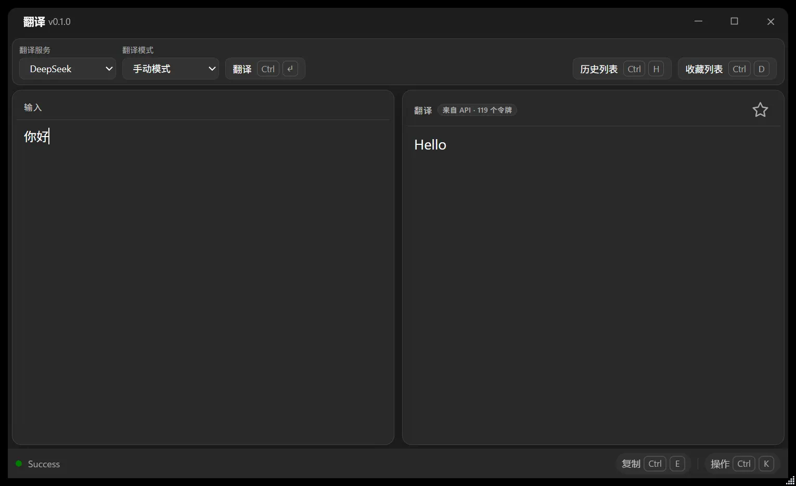
images/13-translator.webp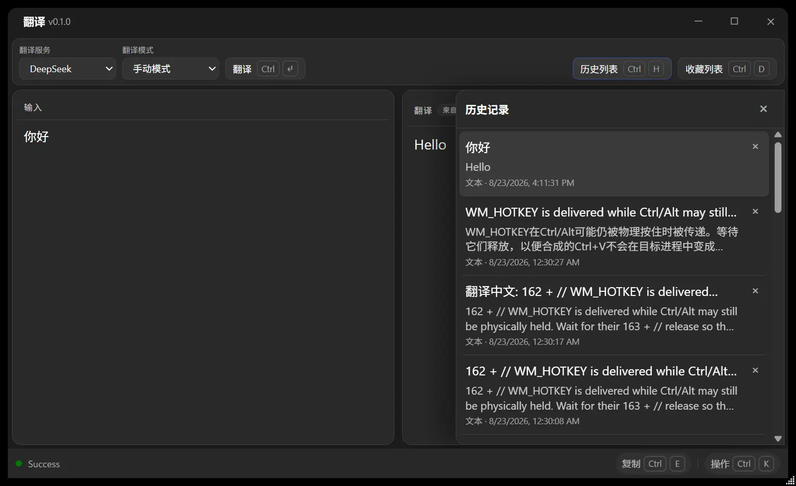
images/13-translator-history.webp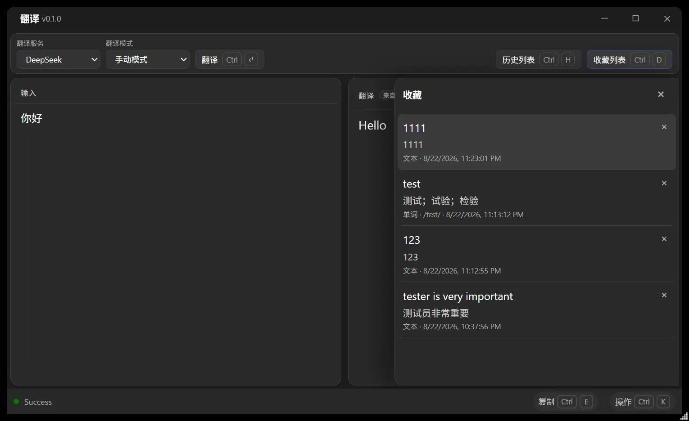
images/13-translator-favorites.webpFORMAT & VALIDATE
输入别名 json 或 xml 打开对应格式化工具。粘贴内容后可以格式化、校验、压缩、复制，并折叠或展开结构。
{
"user_info": {
"id": 1024,
"name": "Alice & Bob",
"tags": ["admin", "user",, "guest",],
"address": {
"street": "123 Main St.\nApt 4B",
"city": "New York",
"coords": [40.7128, -74.0060]
},
"metadata": {
"created_at": "2023-10-01T12:00:00Z",
"updated_at": null,
"is_active": true,
"score": 99.5,
"extra": {
"nested_array": [1, "two", {"three": 3}, [4, 5, 6]],
"empty_obj": {},
"weird_key-name": "value with \"quotes\" and \\backslashes\\"
}
}
},
"logs": [
{"timestamp": 1696190400, "level": "INFO", "msg": "System started"},
{"timestamp": 1696190460, "level": "ERROR", "msg": "Disk full\nRetry failed", "details": {"code": 500, "trace": ["func_a", "func_b"]}},
{"timestamp": 1696190520, "level": "WARN", "msg": "High memory usage"}
],
"config": {
"timeout": 30,
"retries": 3,
"features": {"dark_mode": false, "beta_access": true, "limits": {"max_upload": 10485760, "max_download": 52428800}}
},
"empty_string": "",
"zero_value": 0,
"boolean_false": false,
"unicode_test": "你好世界 café résumé",
"trailing_comma_issue": [1, 2, 3,],
}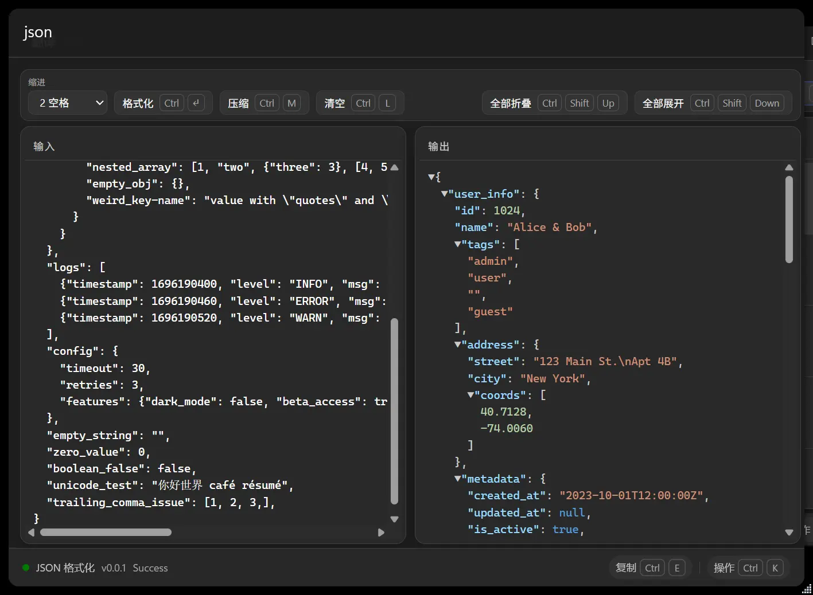
images/14-formatter.webp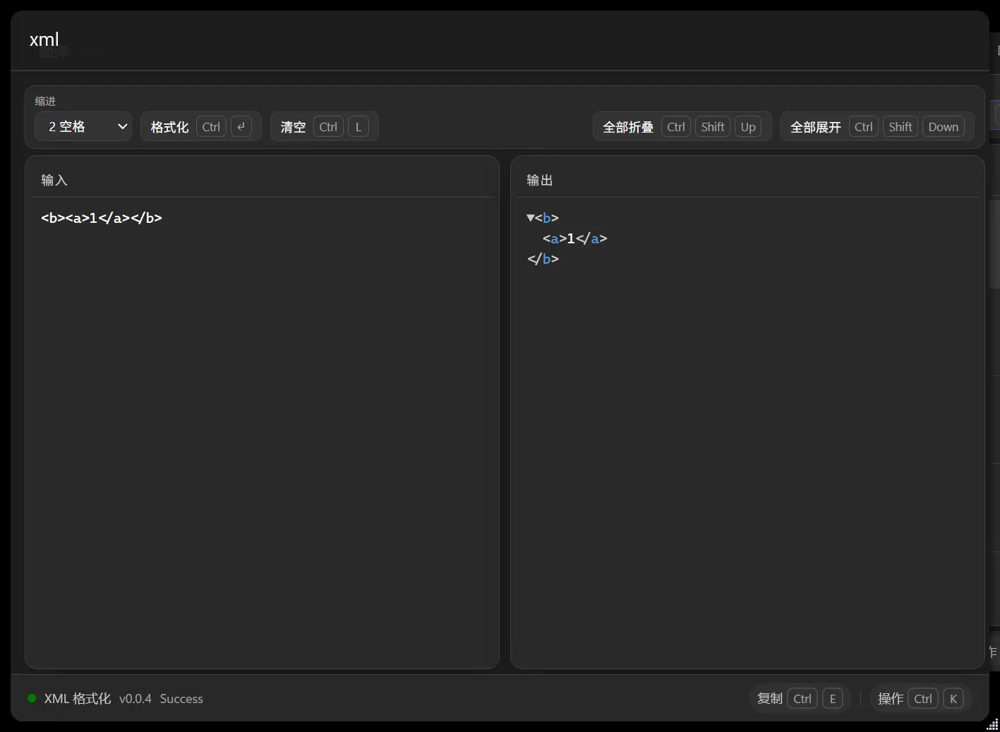
images/14-xml-formatter.webpBUILD WITH AI
“创建插件”提供 AI 创建、修改和删除开发插件的界面。开始前，需要先配置 DeepSeek API Key。
在 PowerShell 中运行下面的命令，把示例值替换成自己的 Key，然后彻底退出并重新启动 MyTools。
[Environment]::SetEnvironmentVariable(
"DEEPSEEK_API_KEY",
"你的 DeepSeek API Key",
"User"
)用默认热键 Alt + X 或输入 create 打开“创建插件”，选择“自动创建”，描述需求后发送。
在右侧列表选中已有开发插件，确认界面显示“当前选中插件”，再描述需要调整的内容。
选择目标开发插件，点击删除并确认。删除前先确认没有需要保留的代码或配置。
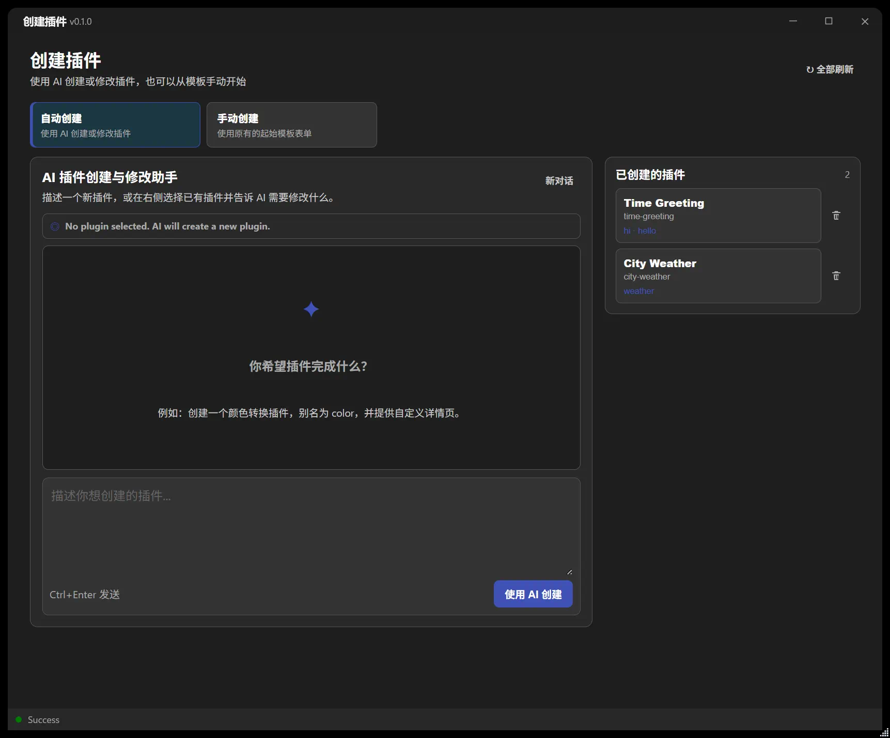
images/15-create-plugin-overview.webp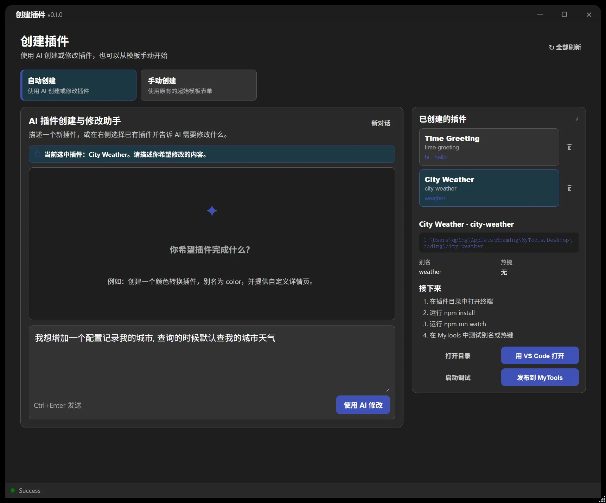
images/15-edit-plugin.webp目标：输入城市查询天气；不出现在全局搜索中；别名为 tq。
创建一个天气查询插件。用户输入城市名称后，查询并显示该城市的当前天气。插件不要出现在全局搜索结果中，别名设置为 tq。
tq 上海 能返回天气只输入“上海”时不出现该插件结果先在右侧选中刚创建的天气插件，再继续对话。
我希望默认查询自己当前城市的天气；如果用户指定了城市，就查询用户输入的城市。
tq 查询当前位置城市输入 tq 北京 时以北京为准继续选中同一个插件，让 AI 新增一个可编辑的配置项。
给这个插件增加一个文本输入类型的配置项，用来设置我自己的城市。没有在搜索中指定城市时，优先使用这个配置值；配置为空时再获取当前城市。
tq 默认查询该城市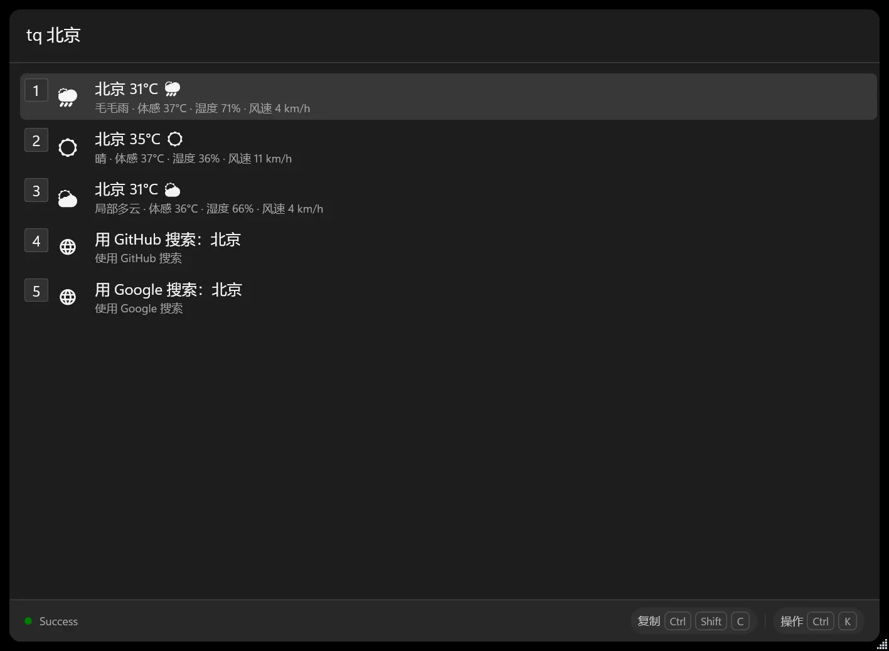
images/16-weather-plugin.webpCHEAT SHEET
ffcreateguid [数量]表达式 / calcsnip / 触发词json / xml